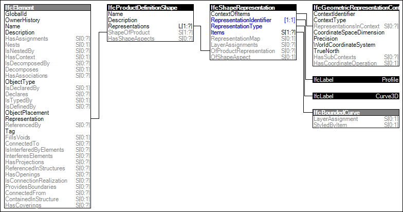

Link to this page
Link to this pageThe Profile 3D Geometry is the standard representation of the outer profile for elements filling an opening. Examples of such elements include doors and windows. In the case of doors and windows the profile geometry is used to apply the parametric definition of lining and panel dimensions to the profile.
The following attribute values for the IfcShapeRepresentation holding this geometric representation shall be used:
Figure 70 illustrates an instance diagram.
 |
Figure 70 — Profile 3D Geometry |